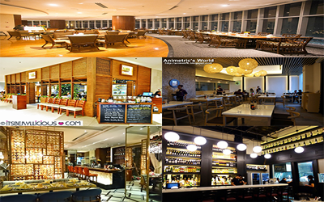

Where to EAT?
Filipinos indeed are food lovers. This is why many Filipinos invest in the food industry. Restaurants and food stalls are
everywhere in the city. Come and discover the Top 5 stores where you can enjoy and satisfy your hungry tummy!
